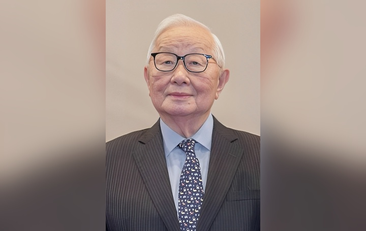
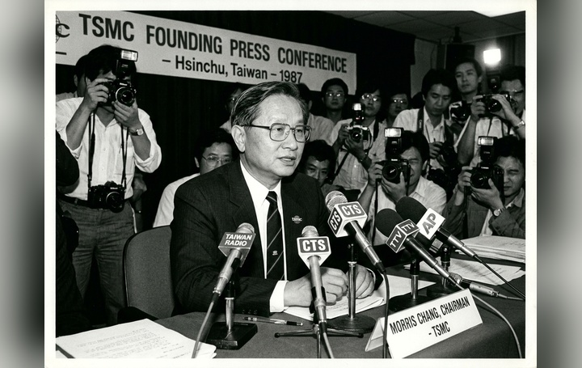

STRATEGIC CHOKEPOINT // チョークポイント
台湾海峡 160KM
新竹サイエンスパーク（TSMC本社）
世界最先端半導体の90%以上が集中する海峡
世界最先端半導体の90%以上が集中する海峡
THE CRITICAL MONOPOLY // たったひとつの企業
TSMC
台湾積体電路製造
世界の最先端チップを独占する巨人 — ここが止まれば、世界経済が止まる
もし明日、台湾海峡で戦争が勃発し、たったひとつの企業が操業を停止したらどうなるでしょうか？
HALTED

FROZEN

COLLAPSED

GLOBAL ECONOMIC CATASTROPHE:
-10,000,000,000,000 USD (年間1500兆円の損失)
あなたの手元のスマートフォンは製造不能になり、全世界のAI開発は完全凍結。データセンターは沈黙し、世界経済は数週間で数千兆円の壊滅的打撃を受けます。
90%
GLOBAL MONOPOLY
最先端 3nm / 2nm プロセス供給比率
世界シェア90%以上をTSMCが単独供給
代替不能な唯一無二の「チョークポイント（急所）」
代替不能な唯一無二の「チョークポイント（急所）」
TSMC (台湾積体電路製造)
REPORT REF: TSMC-SHARE-1987
SOURCE: TRENDFORCE INDUSTRY RESEARCH // BOSTON CONSULTING GROUP (BCG) REPORT
その企業の名前は、TSMC（台湾積体電路製造）。世界の先端半導体の90％以上を独占する、人類史上最も危険で、最も不可欠な「チョークポイント（急所）」です。
1.2兆円投入

KUMAMOTO, JAPAN // 2024.02
JASM 熊本第1工場 開所
のどかなキャベツ畑の真ん中に突如現れた巨大半導体拠点。
日本政府が1兆2000億円の異例補助金を投じ、半導体復権へ賭けた歴史的プロジェクト。
日本政府が1兆2000億円の異例補助金を投じ、半導体復権へ賭けた歴史的プロジェクト。

FOUNDER // 93 YEARS OLD
モリス・チャン（張忠謀）
「日本と台湾の半導体協力は、新たなルネサンスをもたらす」。
政財界のトップたちが93歳の老人に深々と頭を下げた瞬間。
政財界のトップたちが93歳の老人に深々と頭を下げた瞬間。
2024年2月、日本の熊本県菊陽町。突如現れた巨大工場に、日本政府は異例の1兆2000億円を超える巨額補助金を投じ、政財界のトップたちが93歳の老人に深々と頭を下げました。
2024 熊本開所
◀ 2010 スマホ革命
◀ 1995 上場
● 1987 TSMC創業

技術・資金・名声ゼロ
しかし、時計の針を37年前、1987年に戻してみてください。この会社は、技術なし、資金なし、名声なし。55歳で台湾に渡った一人の男が立ち上げた「誰も見向きもしない下請け工場」でした。
HISTORICAL DOCUMENTARY CASE STUDY
TSMC
THE SEMICONDUCTOR EMPIRE
常識を覆し続けた男の狂気の逆転劇 — 1987-2024
[ APPLE ] · [ NVIDIA ] · [ AMD ] · [ QUALCOMM ] · [ ASML ]
なぜ、誰にも相手にされなかった町工場が、AppleやNVIDIA、そして米日すらひれ伏す怪物になれたのか？これは、常識を覆し続けた男の狂気の逆転劇です。